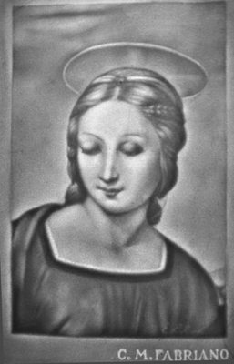
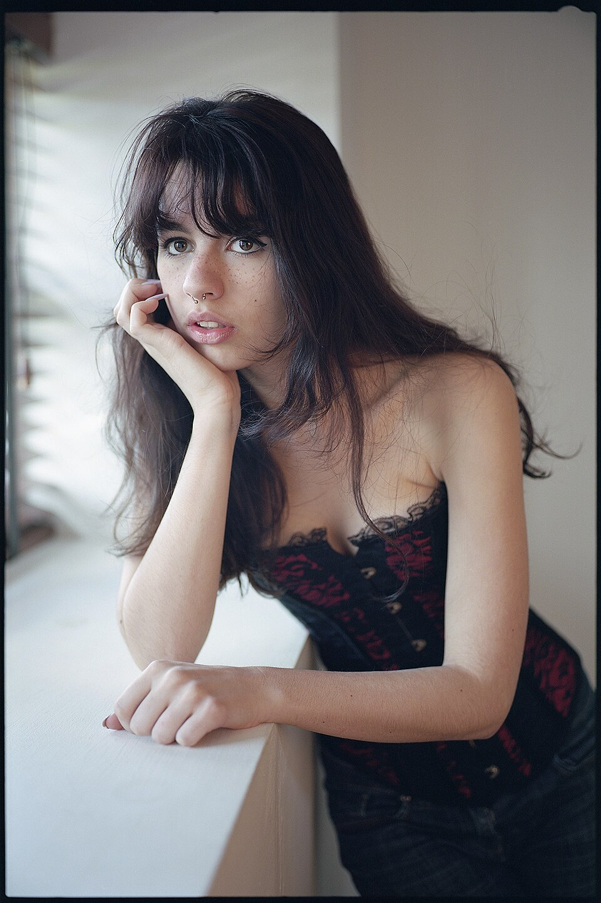
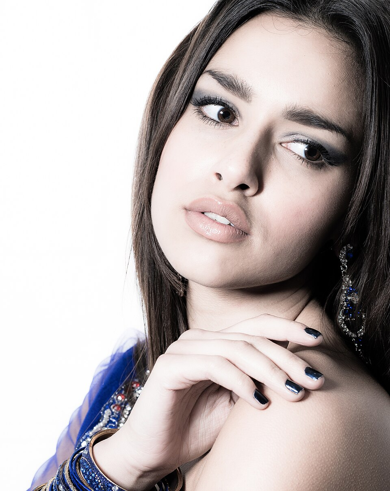
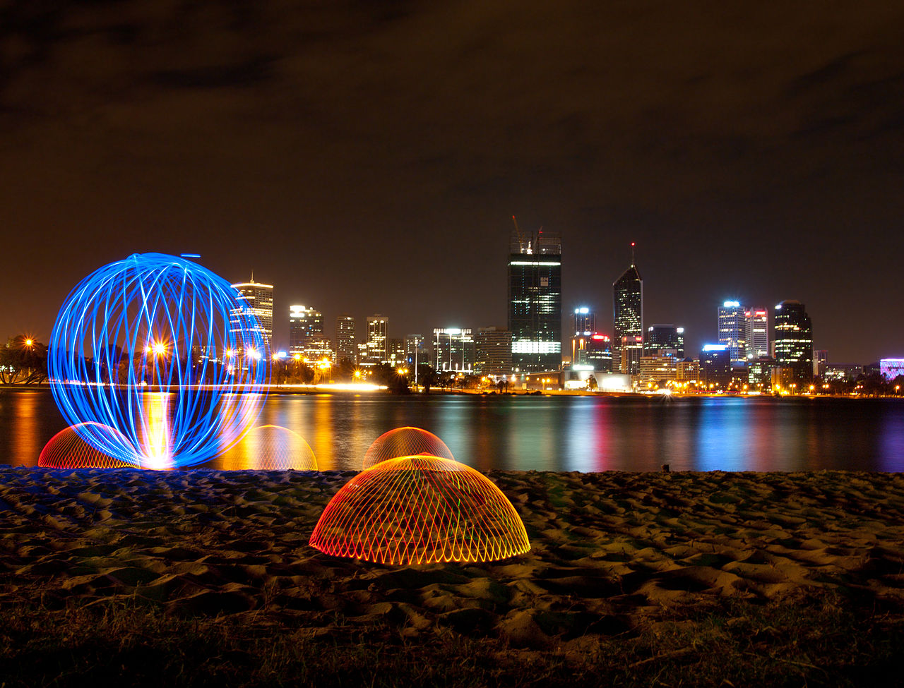

Objetivo do módulo
Conhecer os tipos de iluminação e sua aplicação na fotografia: identificar a relação entre fotografia e pintura, compreender o processo de iluminação e interpretar o objeto em relação à luz.
Parte 1
De onde vem a luz?
Essa é a pergunta do fotógrafo. Sem luz, não há fotografia. E não é só ter luz: é entender a qualidade, a direção e a cor dela. Como vimos no Módulo 1, os grandes pintores já dominavam isso séculos antes da câmera existir.


Antes de clicar, observe: a luz bate de frente, do lado, de cima, por trás? Ela é forte e direta, ou suave e espalhada? Essa leitura define toda a foto.
Parte 2
Fontes de iluminação: natural e artificial
☀️ Luz natural
Vem do sol (e do céu). Muda o tempo todo: o sol do meio-dia é duro e vertical; o do início da manhã e fim da tarde é quente e suave. Janelas são uma fonte natural maravilhosa para retratos.
💡 Luz artificial
Criada por nós: lâmpadas, flash, LEDs, softbox, luminárias, velas. A vantagem é o controle total — você decide intensidade, posição e cor.
Logo após o nascer e pouco antes do pôr do sol, a luz fica quente, suave e dourada, com sombras longas e bonitas. É a hora preferida de muitos fotógrafos. Já a “hora azul” (crepúsculo) dá um clima frio e cinematográfico.

Parte 3
A qualidade da luz: dura × suave
Essa é a distinção mais importante da iluminação. Ela depende basicamente do tamanho da fonte em relação ao assunto:
Fonte pequena e distante (sol a pino, flash direto, lanterna) = luz dura, sombras duras. Fonte grande e próxima (céu nublado, janela, softbox) = luz suave.
Luz dura (pontual)
Sombras bem definidas, alto contraste, textura realçada. Boa para drama, força, fotos masculinas, recortes gráficos.
Luz suave (difusa/refletida)
Sombras leves, transição gradual, pele bonita. Ideal para retratos delicados, produtos e clima aconchegante.
Dia nublado não é dia ruim para fotografar — é o contrário! As nuvens funcionam como um gigantesco difusor, criando a luz suave perfeita para retratos.
Parte 4
A luz e o contraste
Contraste é a diferença entre as áreas claras e escuras da imagem. Luz dura gera alto contraste (pretos profundos, brancos intensos); luz suave gera baixo contraste (tons mais próximos, imagem “lavada” e delicada). Nem um nem outro é “certo” — depende da intenção da sua foto.

Parte 5
A direção da luz
De onde a luz incide muda completamente o resultado. As principais direções:
A mesma pessoa, quatro luzes diferentes, quatro emoções diferentes. Experimente girar ao redor do seu assunto!

Parte 6 · o clássico
O esquema de iluminação (3 pontos)
O esquema mais usado no mundo (cinema, estúdio, retrato) combina três luzes com funções diferentes:
Vista de cima: luz principal de um lado, preenchimento mais fraco do outro, e a contraluz por trás separando o assunto do fundo.
- Luz principal (key light): a luz mais forte, que define a forma e as sombras. É a “estrela” da cena.
- Luz de preenchimento (fill): mais fraca, do lado oposto, para suavizar as sombras sem eliminá-las.
- Contraluz / luz de fundo (back light): atrás do assunto, cria um contorno de luz que o separa do fundo e dá profundidade.
- Luz frontal e lateral: variações de posição da principal — frontal achata, lateral dá volume.
Parte 7 · faça você mesmo
Equipamentos — e soluções caseiras
Você não precisa de equipamento caro para fazer fotos lindas. Com criatividade e itens simples, dá para controlar a luz como um profissional:
⬜ Rebatedor
Uma placa de isopor ou cartolina branca rebate a luz de volta, clareando as sombras (= luz de preenchimento grátis).
🧻 Difusor
Uma folha de papel vegetal (ou um tecido fino) na frente da fonte transforma luz dura em luz suave.
🪟 Janela
A melhor fonte caseira de luz suave. Posicione o assunto ao lado dela e observe a mágica.
🔦 Lanterna / celular
A lanterna do celular vira uma luz pontual para criar drama em pequenos objetos.
🕯️ Velas e luminárias
Fontes quentes que criam atmosfera — ótimas para treinar o controle de ISO e velocidade.
📦 Softbox / LED
Se quiser investir: um pequeno LED com softbox dá luz suave e controlável para retratos e produtos.

Pegue um objeto pequeno e fotografe-o de três formas: (1) com luz dura direta, (2) com a luz difundida por papel vegetal, e (3) com um rebatedor de isopor clareando as sombras. Compare os resultados — você vai ver a diferença que a luz faz.
Parte 8
Fotografia noturna
Fotografar à noite é um ótimo desafio para aplicar o triângulo da exposição. Com pouca luz, você precisa equilibrar bem os três ajustes:
- Apoio firme: com velocidade lenta, qualquer tremida borra a foto. Use um tripé ou apoie o celular numa superfície.
- Velocidade lenta (longa exposição): deixa o sensor captar mais luz e cria efeitos incríveis — rastros de carros, água sedosa, luzes em traço.
- ISO controlado: aumente só o necessário, para não encher a foto de ruído.
- Balanço de branco: a noite tem luzes de várias cores — ajuste para o clima que você quer.


Dominando a luz da sala
Vamos usar exatamente o que temos na nossa sala: as janelas grandes e as duas softboxes. Em duplas, um fotografa e o outro é modelo — depois trocam.
- Só com a luz da janela: posicione o modelo de lado para a janela (luz lateral) e observe o claro-escuro. Depois de frente (luz frontal) e de costas (contraluz). Compare as três.
- Dura × suave: fotografe com a luz direta entrando e depois com a janela difundida (cortina fina ou papel vegetal). Veja as sombras suavizarem.
- Esquema de 2 pontos com as softboxes: uma como luz principal a ~45° e a outra como preenchimento mais fraca do lado oposto. Depois desligue o preenchimento e use o isopor como rebatedor — compare.
- Retrato dramático: use uma só softbox lateral, afaste o modelo da parede e deixe o fundo escuro. Caça ao claro-escuro do Caravaggio!